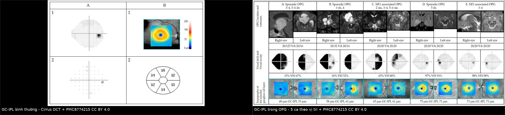
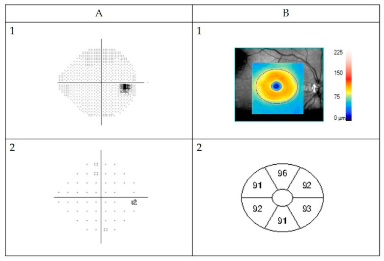
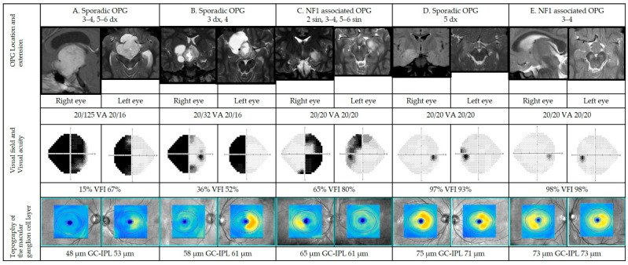
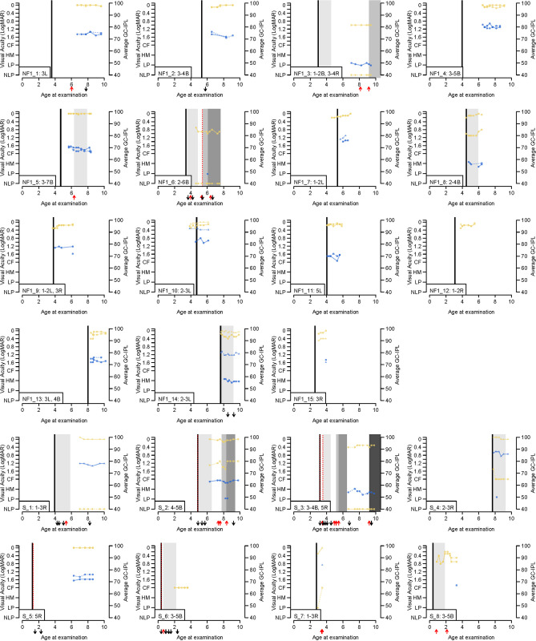

1453 — OCT RNFL/GCL trong theo dõi OPG–NF1: ngưỡng mỏng bao nhiêu, có báo trước giảm thị lực không / OCT RNFL and GC-IPL in NF1 optic pathway glioma surveillance
Tags: pattern:mong-vong-mac pattern:teo-gai-thi pattern:u-duong-thi vung:mat vung:hoang-diem vung:than-kinh-thi protocol:OCT protocol:OCT-RNFL protocol:sang-loc-thi-luc score:percentile incidentaloma:khong
Mức chắc chắn (certainty): tổng hợp y văn (literature synthesis) — 1 đoàn hệ tiến cứu 77 trẻ (25 OPG) với GC-IPL/pRNFL (PLoS One 2024, PMC11239031, CC BY), 1 nghiên cứu 51 trẻ đối chiếu GC-IPL với thị trường–MRI (Cancers 2022, PMC8774215, CC BY), 1 đoàn hệ dọc 55 mắt/250 lượt về ngưỡng RNFL dự báo mất thị lực (Am J Ophthalmol 2015, PMC4661093), 1 nghiên cứu GC-IPL phân biệt mất thị lực (IOVS 2014, PMC3954001), 1 giá trị chuẩn GC-IPL ở 85 trẻ 6,5 tuổi (BMC Ophthalmol 2020, PMC7425168, CC BY), 1 tổng quan hệ thống về độ chính xác OCT (PLoS One 2021, PMC8699950, CC BY), 1 nghiên cứu độ tái lặp OCT cầm tay (Am J Ophthalmol 2014, PMID 25068639), và guideline NF1 đã tổng hợp ở bài 1758 (ERN GENTURIS 2023, PMC9845795). Không có ca nguyên văn do nhóm tự viết; ca quiz lấy từ hình bài gốc, ghi PMCID.
Câu chốt: không có một ngưỡng µm tuyệt đối dùng chung cho mọi máy, mọi tuổi. Cách đúng là 3 lớp: (1) so với chuẩn theo tuổi/máy — ở trẻ 6,5 tuổi (Cirrus), GC-IPL trung bình 85,9 ± 5,3 µm, bách phân vị 5 = 76,0 µm; (2) so mắt bên — chênh > 2 µm giữa hai bán cầu là bất thường; (3) theo dõi dọc — giảm ≥ 10% RNFL ở ≥ 2 vùng giải phẫu dự báo mất thị lực với PPV 100% / NPV 94%. Ở trẻ NF1 có OPG, GC-IPL trung bình 70 µm (so với 85 µm khi không OPG) và 62 µm ở OPG lẻ tẻ. GC-IPL lấy được ở 88% mắt (pRNFL chỉ 49%) và sớm hơn 1,2 năm tuổi — nên ưu tiên GC-IPL khi trẻ chưa hợp tác.
1. Tổng quan bệnh học – cơ chế hình ảnh
1.1 Giải phẫu – vì sao OCT nhìn được tổn thương đường thị
- Tế bào hạch võng mạc (retinal ganglion cell) nằm ở lớp tế bào hạch; sợi trục của chúng tạo lớp sợi thần kinh (RNFL), chạy về đĩa thị rồi thành dây thị. Khi đường thị bị chèn ép/u thâm nhiễm, sợi trục thoái hóa ngược dòng → mỏng GC-IPL ở hoàng điểm và mỏng pRNFL quanh đĩa.
- Thứ tự thời gian: tổn thương thân tế bào/thần kinh → mất sợi trục → mỏng RNFL; vì RNFL là sợi trục, nó mỏng sau khi tế bào hạch đã tổn thương. GC-IPL (thân tế bào) thường phản ánh sớm hơn và dễ đo hơn ở trẻ nhỏ (PMC11239031).
- Vì sao "mỏng mà thị lực còn tốt" vẫn có thể xảy ra: thị lực đo trung tâm và chỉ cần một phần nhỏ tế bào hạch hoàng điểm; mất 40–50% tế bào hạch mới làm thị trường lâm sàng lộ ra. Ở trẻ, thị lực/ thị trường còn khó đo, nên OCT có thể là dấu hiệu sớm hơn — nhưng đây là suy luận từ bệnh sinh, chưa phải bằng chứng can thiệp (xem 1.4).
1.2 Vật lý OCT — đọc đúng con số
- SD-OCT 840 nm, độ phân giải trục ~5 µm; phần mềm tự phân đoạn các lớp. GC-IPL = lớp tế bào hạch + lớp rối trong; máy Cirrus đo trong vòng ellipse 3,0 mm quanh hoàng điểm (6 vùng).
- pRNFL đo trên vòng tròn 3,4 mm quanh đĩa thị; bị ảnh hưởng bởi bán kính nhãn cầu (mắt cận thị dài → RNFL mỏng giả) và đĩa thị nghiêng.
- Sàn đo (measurement floor): GC-IPL không thể mỏng hơn 31–45 µm trên Cirrus (tùy phiên bản) — khi đã ở sàn, không phân biệt được nặng thêm; đây là lý do không dùng GC-IPL để theo dõi mắt đã mù (PMC11239031).
- Chất lượng ảnh: signal strength ≥ 7/10 (hoặc ≥ 6 nếu máy cũ), không lệch tâm, đồng tử giãn, cùng máy qua các lần — nếu không, không kết luận tiến triển.
1.3 Ngưỡng định lượng trụ cột
| Đại lượng | Con số | Nguồn |
|---|---|---|
| GC-IPL trung bình ở trẻ không OPG | 85 ± 0,4 µm (SE) | PMC11239031 |
| GC-IPL ở NF1 có OPG | 70 ± 0,7 µm | PMC11239031 |
| GC-IPL ở OPG lẻ tẻ | 62 ± 1,4 µm | PMC11239031 |
| pRNFL trung bình (không OPG / NF1-OPG / lẻ tẻ) | 100 / 70 / 77 µm | PMC11239031 |
| Chuẩn GC-IPL trẻ 6,5 tuổi (Cirrus) | 85,9 ± 5,3 µm; P5 = 76,0 µm; P95 = 94,6 µm | PMC7425168 |
| Chênh lệch GC-IPL giữa hai mắt | bán cầu < 2 µm; chênh sector lớn nhất 6,4 ± 2,2 µm (P5–P95: 3,0–10,0) | PMC7425168 |
| Tỉ lệ lấy được GC-IPL / pRNFL | 88% (132/151 mắt) / 49% (73/151) | PMC11239031 |
| Tuổi lấy được lần đầu | GC-IPL 5,6 ± 1,5 vs pRNFL 6,8 ± 1,3 tuổi | PMC11239031 |
| Tương quan GC-IPL–pRNFL / –VA / –VFI | r = 0,662 / −0,661 / 0,644 | PMC11239031 |
| Ngưỡng giảm RNFL dự báo mất thị lực | ≥ 10% ở ≥ 2 vùng → PPV 100%, NPV 94% | PMC4661093 |
| AUC của RNFL trung bình dự báo tiến triển | 0,94 | PMID 23736991 |
| GC-IPL dưới bách phân vị 5 phân biệt mất thị lực | AUC 0,989 (vòng 3,0 mm) | PMC3954001 |
| Độ chính xác OCT (tổng quan) | RNFL Se 60–100% / Sp 76,6–100%; GC-IPL AUC 0,91–0,98 | PMC8699950 |
| Độ tái lặp GC-IPL cầm tay | CV ≤ 4,5% trong lần; CV 1,6–5,2% giữa các lần | PMID 25068639 |
1.4 "Có dự báo trước khi khám thấy giảm thị lực không?" — trả lời có điều kiện
- Có, ở mức tín hiệu: nghiên cứu dọc 55 mắt cho thấy giảm ≥ 10% RNFL ở ≥ 2 vùng có PPV 100% / NPV 94% cho một đợt mất thị lực mới; mức giảm lớn nhất ở vùng trên (−14%), dưới (−10%) và trung bình toàn cầu (−13%) (PMC4661093).
- GC-IPL tương ứng với thị trường và MRI: mất GC-IPL theo hình thái khớp 95% với khuyết thị trường và 92% với vị trí tổn thương trên MRI; tác giả kết luận GC-IPL có thể là dấu hiệu sớm của thay đổi đe dọa thị lực (PMC8774215).
- Nhưng chưa có bằng chứng can thiệp: tổng quan hệ thống chỉ tìm được 5 nghiên cứu chẩn đoán (186 trẻ), không có nghiên cứu tiên lượng đủ tiêu chuẩn; rất không đồng nhất về máy, protocol, ngưỡng (PMC8699950). Vì vậy không được điều trị chỉ vì một lần OCT mỏng — phải lặp lại, đối chiếu thị lực/thị trường/MRI và hội chẩn.
- Cạm bẫy diễn giải: "OCT mỏng trước" trong nghiên cứu cắt ngang không chứng minh nhân quả; một số mắt có thị lực bình thường nhưng GC-IPL đã mỏng (PMC8774215), ngược lại có mắt mỏng do cận thị/đĩa nghiêng không do u.
2. Mẫu hình + chẩn đoán phân biệt theo vị trí (Gamut)
Mẫu hình: trẻ NF1 (hoặc nghi OPG), OCT mỏng GC-IPL/pRNFL, thị lực có thể bình thường hoặc giảm.
- OPG đoạn trước giao thoa/dây thị: mỏng một mắt, đôi khi một phần tư; đĩa thị có thể teo; MRI dày dây thị.
- OPG giao thoa: mỏng hai mắt không đối xứng, có thể bitemporal; thị trường bán manh hai bên.
- OPG đường thị (tract): teo theo hình thái homonymous (nửa võng mạc cùng phía tổn thương) — gợi ý mạnh vị trí sau giao thoa; có ca không có khuyết thị trường (PMC32351443).
- Không phải OPG: FASI của NF1 (không mỏng), teo thị do tăng áp nội sọ/não úng thủy, bệnh thần kinh thị do độc chất/di truyền, glôcôm, bất thường giải phẫu (đĩa nghiêng, cận thị nặng), lỗi phân đoạn.
- Mỏng giả: lệch tâm hoàng điểm, máy khác, không giãn đồng tử, mờ do đục thể thủy tinh, bán kính nhãn cầu dài.
3. Bảng so sánh phân biệt (ma trận đối chiếu)
| Thực thể (entity) | Hình ảnh điển hình (OCT) | Chốt vào (rule-in) | Chốt loại (rule-out) | Gợi ý xác nhận |
|---|---|---|---|---|
| OPG–NF1 (bài này) | GC-IPL mỏng một bên/không đối xứng, pRNFL mỏng theo vùng; pattern khớp MRI và thị trường | NF1 + mỏng GC-IPL/pRNFL + MRI dày đường thị | OCT bình thường đối xứng + MRI không tổn thương → không OPG hoạt động | MRI sọ–hốc mắt; lặp OCT 6–12 tháng; khám thần kinh nhãn khoa |
| FASI của NF1 | T2/FLAIR tăng tín hiệu không choán chỗ, không mỏng GC-IPL | Không hiệu ứng khối + OCT bình thường | Mỏng GC-IPL tiến triển + MRI dày đường thị → OPG | So MRI nhiều lần; không điều trị FASI |
| Teo thị do tăng áp nội sọ | pRNFL dày giai đoạn cấp (phù gai), sau đó mỏng; GC-IPL mỏng vành hoàng điểm | Phù gai hai bên + đau đầu/nôn + MRI não úng thủy | pRNFL mỏng đều, không phù gai, không tăng áp | MRI não; đo áp lực mở; OCT lặp |
| Glôcôm | pRNFL mỏng theo bó, GC-IPL mỏng tương ứng, đĩa lõm | IOP cao + lõm đĩa + mỏng theo bó | IOP bình thường, đĩa không lõm, mỏng đối xứng | Đo IOP, gonioscopy, thị trường |
| Cận thị trục dài/đĩa nghiêng | pRNFL mỏng giả, GC-IPL bình thường; đĩa nghiêng | Bán kính nhãn cầu dài + GC-IPL bình thường | GC-IPL mỏng thật + MRI tổn thương | Đo trục nhãn cầu; OCTA; so mắt bên |
| Lỗi phân đoạn/ảnh kém | Đường phân đoạn lệch, signal thấp, thay đổi giữa 2 lần | Signal ≥ 7 + cùng máy + lặp lại ổn định | Signal thấp/lệch tâm/lệch máy | Chụp lại; kiểm tra segmentation |
| Bệnh thần kinh thị khác (LHON, độc chất) | Mỏng GC-IPL hai bên đối xứng, không liên quan MRI đường thị | Tiền sử gia đình/thuốc + mỏng đối xứng | Mỏng một bên + MRI OPG | Bệnh sử, xét nghiệm di truyền/độc chất |

Trái: GC-IPL bình thường — bản đồ dày, các sector 91–96 µm, thị trường bình thường. Phải: 5 ca OPG theo vị trí — GC-IPL 48–75 µm, mất theo hình thái khớp thị trường và MRI. Cả hai từ Cancers 2022 (PMC8774215), CC BY 4.0; ảnh ghép letterbox, không crop.Dấu hiệu đọc chuẩn xác
- Đọc theo hình thái, không chỉ số trung bình: mỏng một phần tư/nửa võng mạc gợi ý tổn thương trước giao thoa; homonymous gợi ý đường thị; vành hoàng điểm gợi ý bệnh thần kinh thị/glôcôm.
- So mắt bên: ở trẻ chưa có chuẩn theo tuổi, bất đối xứng > 2 µm giữa hai bán cầu hoặc > 10 µm giữa sector là cờ đỏ (dựa trên phân bố chuẩn, PMC7425168).
- Luôn đặt cạnh MRI: GC-IPL khớp 92% với vị trí tổn thương trên MRI trong nghiên cứu của PMC8774215 — nhưng 8% không khớp, nên MRI vẫn là chuẩn vị trí.
4. Protocol chụp + hệ phân độ/điểm chuẩn hóa
4.1 Khi nào chụp — lịch thực hành
- Bắt đầu khi chẩn đoán NF1, cùng lúc với khám mắt cơ sở; lặp 6–12 tháng/lần đến 8 tuổi, sau đó hằng năm đến tuổi trưởng thành (guideline ERN GENTURIS 2023, PMC9845795 — chi tiết ở bài 1758).
- OCT mỗi lần khám mắt định kỳ khi trẻ hợp tác; nếu trẻ < 5 tuổi/không hợp tác, dùng OCT cầm tay dưới mê (cùng lúc MRI/EUA) — GC-IPL lấy được sớm hơn pRNFL 1,2 năm (PMC11239031).
- Chụp thêm ngay khi: thị lực giảm ≥ 0,2 logMAR, thị trường mới bất thường, lác/mất thị lực một mắt, hoặc MRI mới có tổn thương — không chờ lịch định kỳ.
4.2 Cách chụp — thông số tối thiểu
- Máy: cùng một máy qua các lần (Cirrus/Spectralis/….); ghi model + phần mềm.
- GC-IPL: macular cube 512 × 128, vòng ellipse 3,0 mm (hoặc 1,5/4,5 để so), 6 sector + trung bình + minimum.
- pRNFL: vòng tròn 3,4 mm quanh đĩa, 4 quadrant + trung bình; đo bán kính nhãn cầu nếu cận thị.
- Chất lượng: signal ≥ 7, không lệch tâm, đồng tử giãn; lưu ảnh thô để so segmentation.
4.3 Ngưỡng diễn giải (3 lớp) + thuật toán
| Lớp | Ngưỡng | Hành động |
|---|---|---|
| Tuyệt đối theo tuổi/máy | GC-IPL trung bình < P5 (ở 6,5 tuổi Cirrus: < 76,0 µm); pRNFL theo bảng tuổi của máy | Lặp lại + khám thị lực/thị trường/MRI |
| Bất đối xứng | Chênh > 2 µm giữa hai bán cầu hoặc > 10 µm giữa sector | Nghi tổn thương một bên; MRI đường thị |
| Theo dõi dọc | Giảm ≥ 10% RNFL ở ≥ 2 vùng (hoặc giảm ≥ 5% ở ≥ 2 vùng nếu có triệu chứng) | Cờ đỏ tiến triển; lặp 3 tháng + MRI |
flowchart TD
A[Tre NF1 kham mat dinh ky] --> B{OCT kha thi?}
B -->|Khong| C[OCT cam tay duoi me<br/>hoac chi thi luc + MRI khi co chi dinh]
B -->|Co| D[GC-IPL 3,0 mm + pRNFL 3,4 mm<br/>cung may, signal tren 7]
D --> E{GC-IPL duoi P5<br/>hoac bat doi xung?}
E -->|Khong| F[Theo doi 6-12 thang<br/>lap OCT + thi luc]
E -->|Co| G[Lap OCT 3 thang<br/>thi luc - thi truong - MRI duong thi]
G --> H{Thay doi that<br/>tren 2 lan hoac MRI?}
H -->|Khong| F
H -->|Co| I[Chan doan OPG hoat dong<br/>hoi chan ung thu nhi]
I --> J{Co chi dinh dieu tri?<br/>thi luc giam - thi truong - u tien trien}
J -->|Khong| F
J -->|Co| K[Dieu tri theo 1758<br/>theo doi OCT + thi luc]
4.4 Không thay thế được gì
- OCT không thay MRI để chẩn đoán/vị trí OPG; không thay thị lực để quyết định điều trị (guideline 1758).
- Không dùng OCT để sàng lọc NF1 không triệu chứng thay khám mắt — bằng chứng can thiệp còn thiếu; OCT là công cụ bổ trợ khi khám mắt không kết luận hoặc trẻ không đo được thị lực.
5. Biến thể bình thường và cạm bẫy
- "Mỏng hơn 76 µm là bệnh" — chỉ đúng với Cirrus ở trẻ 6,5 tuổi; máy khác, tuổi khác, bán kính nhãn cầu khác → phải dùng bách phân vị theo tuổi/máy, không dùng một số cho mọi trẻ.
- Sàn đo 31–45 µm: ở mắt đã mù, GC-IPL không thể giảm thêm; đừng báo "ổn định" hay "tiến triển" dựa trên con số ở sàn.
- Đo một lần rồi kết luận: độ tái lặp CV 1,6–5,2% giữa các lần — thay đổi < 5% có thể là nhiễu, không phải tiến triển (PMID 25068639).
- FASI không phải u: ổ T2 tăng tín hiệu không choán chỗ, không làm mỏng GC-IPL; gọi nhầm dẫn tới điều trị hóa chất oan (bài 1758).
- Đĩa nghiêng/cận thị: pRNFL mỏng giả; kiểm tra GC-IPL và bán kính nhãn cầu trước khi kết luận teo thị.
- Phù gai cấp: pRNFL dày, không mỏng — đừng loại trừ OPG/tăng áp nội sọ chỉ vì "RNFL dày"; phải xem GC-IPL và MRI.
- "OCT bình thường = không cần MRI" — sai trong thể giao thoa/đường thị giai đoạn sớm; MRI vẫn cần khi có triệu chứng hoặc thị lực bất thường.
6. Tự lượng giá — Blind Quiz ngay trên trang tĩnh
Ca 1 — Trẻ 5 tuổi NF1, thị lực 20/25 hai mắt, không triệu chứng. GC-IPL 68 µm mắt phải, 72 µm mắt trái; MRI có dày giao thoa thị.

- Gợi ý lâm sàng: không đau, không lác; đốm café-au-lait; phụ huynh hỏi "thị lực tốt sao phải theo dõi?".
- Câu hỏi: (1) GC-IPL 68–72 µm có bất thường không? (2) Có điều trị ngay? (3) Bước tiếp theo?
Bấm để hiện đáp án (findings + chẩn đoán)
- Bất thường: trung bình 68–72 µm thấp hơn P5 76,0 µm của trẻ 6,5 tuổi (Cirrus) và thấp hơn 85 µm ở NF1 không OPG; kèm bất đối xứng 4 µm.
- Chưa điều trị ngay: thị lực bình thường, không triệu chứng; nhưng MRI đã có OPG → cần khám thần kinh nhãn khoa + thị trường + lặp OCT 3 tháng.
- Bước tiếp theo: xác nhận cùng máy, signal ≥ 7, đối chiếu hình thái mất GC-IPL với vị trí MRI; nếu giảm thêm ≥ 10% ở ≥ 2 vùng hoặc thị lực giảm → hội chẩn điều trị.
- Nguồn ảnh: Cancers 2022, PMC8774215, Figure 1, CC BY 4.0 (ảnh bình thường để so sánh).
Ca 2 — Trẻ 6 tuổi NF1 có OPG giao thoa đang theo dõi. GC-IPL 85 µm → 72 µm sau 9 tháng; pRNFL 100 → 88 µm; thị lực vẫn 20/25.

- Gợi ý lâm sàng: không đau; thị trường chưa làm được vì trẻ chưa hợp tác; MRI chưa đổi so với 1 năm trước.
- Câu hỏi: (1) Mức giảm có ý nghĩa? (2) Có gọi là tiến triển? (3) Làm gì tiếp?
Bấm để hiện đáp án (findings + chẩn đoán)
- GC-IPL giảm (85 − 72)/85 = 15,3%; pRNFL giảm 12% — vượt ngưỡng ≥ 10% ở ≥ 2 vùng nếu xác nhận trên bản đồ sector.
- Chưa đủ gọi tiến triển bệnh nếu chỉ một lần: cần lặp sau 3 tháng, cùng máy, signal tốt; đối chiếu thị trường (khi làm được) và MRI.
- Nếu lặp lại vẫn giảm hoặc thị lực giảm ≥ 0,2 logMAR → cờ đỏ tiến triển, hội chẩn điều trị theo bài 1758. Nếu ổn định → tiếp tục theo dõi 6 tháng.
- Bài học: OCT có thể báo trước, nhưng một lần đo không đủ; PPV 100% trong nghiên cứu là khi ≥ 2 vùng và xác nhận.
- Nguồn ảnh: Cancers 2022, PMC8774215, Figure 6, CC BY 4.0.
Ca 3 — Trẻ 4 tuổi NF1, GC-IPL mắt trái 60 µm, mắt phải 82 µm; mất thị trường kiểu homonymous phải; MRI có tổn thương đường thị trái.

- Gợi ý lâm sàng: trẻ không kêu; thị lực đo được 20/32 mắt trái; phụ huynh thấy trẻ nghiêng đầu khi nhìn.
- Câu hỏi: (1) Giải thích hình thái mất GC-IPL? (2) Vì sao thị lực chỉ giảm nhẹ? (3) Theo dõi thế nào?
Bấm để hiện đáp án (findings + chẩn đoán)
- Mỏng GC-IPL một mắt + mất thị trường homonymous khớp tổn thương đường thị trái (teo ngược theo hình thái homonymous), không phải bệnh toàn thân.
- Thị lực chỉ giảm nhẹ vì trung tâm hoàng điểm còn một phần tế bào hạch; thị trường đã mất một nửa — đây là lý do không dựa vào thị lực đơn thuần.
- Theo dõi: OCT GC-IPL mỗi 3–6 tháng, thị trường khi hợp tác, MRI 6–12 tháng; hội chẩn điều trị nếu thị trường xấu đi hoặc GC-IPL giảm tiếp.
- Hình minh hoạ diễn tiến thị lực (đen) và GC-IPL (xanh) theo tuổi ở nhiều bệnh nhi; mũi tên đỏ = đợt mất thị lực — cho thấy GC-IPL có thể giảm trước/đồng thời với thị lực.
- Nguồn ảnh: PLoS One 2024, PMC11239031, Fig. 3, CC BY 4.0.
Bài liên quan chéo
- 400 – Tổng quan Mắt & thị giác
- 1758 – U thần kinh đệm đường thị trong NF1 (sàng lọc, điều trị, guideline)
- 431 – U thần kinh thị: glioma vs meningioma
- 483 – Sàng lọc thị lực trẻ mầm non
- 442 – Glaucoma: OCT RNFL/GCC + góc tiền phòng
- 1419 – Bệnh võng mạc do xạ ở trẻ (OCT/OCTA trong theo dõi sau xạ)
- 262 – Bệnh mạch máu lớn do xạ trị não (moyamoya)
- 600 – Tổng quan Hệ Nhi khoa
Ảnh
1453_GCIPL-binh-thuong_PMC8774215-F1.jpg— GC-IPL bình thường + thị trường (Cancers 2022, CC BY 4.0).1453_OPG-GCIPL_PMC8774215-F6.jpg— 5 ca OPG: MRI, thị lực, thị trường, GC-IPL 48–75 µm (Cancers 2022, CC BY 4.0).1453_dien-tien_PMC11239031-F3.jpg— diễn tiến thị lực và GC-IPL theo tuổi (PLoS One 2024, CC BY 4.0).composite_gcipl-binh-thuong-vs-opg.jpg— ảnh ghép bình thường vs OPG, cả hai CC BY 4.0.- Nguồn + giấy phép từng ảnh: xem
images/CREDITS.mdvàsources.md.
Không dùng để chẩn đoán độc lập khi chưa có người hướng dẫn.